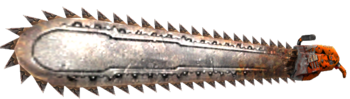
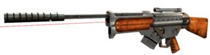
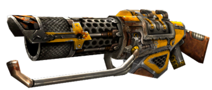
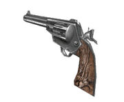
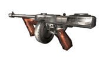
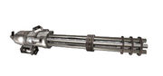
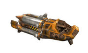
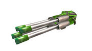
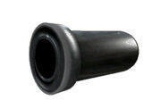

|  | Sierra | Esta arma es extremadamente útil contra la mayoría de las variedades de enemigos más pequeños, siendo más efectiva que el cuchillo militar contra múltiples objetivos. |
|  | Francotirador Raptor | Representa lo mejor y lo último en armas de fuego de larga distancia y alta precisión. Utiliza balas perforantes de 16 mm recubiertas de kevlar que atraviesan la mayoría de los tipos de armadura conocidos. |
|  | XOP Lanzallamas | Es muy efectivo para usar en grandes masas, ya que la corriente se tragará incluso a enemigos parcialmente ocultos. |
|  | Shofield .45 con AMTM | Se trata del otro arma inicial. Es un revólver de calibre .45 con un alimentador de munición tecnomágico para tener munición infinita aunque necesita recargarse cada 6 disparos. Cuando Sam encuentre otra en su camino puede usar dos a la vez |
 |
Escopeta de bombeo de calibre 12 | Escopeta de un cañon que pierde efectividad a largas distancias |
 |
Arma de doble cañón | Escopeta de dos cañones, lo que hace que duplique la potencia de disparo de la anterior perdiendo gran efectividad a larga y media distancia, pero muy potente a corta. Es el arma con menor cadencia de disparo debido a tener que ser recargada manualmente. |
|  | Metralleta M1-A2 Thompson | Versión modificada de la metralleta Thompson para poder disparar munición de la XM214-A. Este arma tiene una gran precisión y rapidez de disparo, lo que permite a Sam crear gran cantidad de daño en poco tiempo. |
|  | Miniarma XM214-A | Continuación de los modelos Gatling, Vulcan y M134, dispara munición de 5.56mm. Dispara el doble de rápido que la Thompson, pero necesita un corto periodo de tiempo para comenzar a girar el tambor. Este arma se ha combertido en una seña de identidad de Sam. |
|  | Lanzacohetes XPML21 | Lanzacohetes experimental que lanza misiles Inferno de 150 mm, de forma automática y rápida. La onda expansiva de los misiles puede dañar a Sam. |
 |
Lanzagranadas MKIII | Es un lanzagranadas al que se le puede ajustar la velocidad de lanzamiento, haciendo más daño si se impacta directamente a un enemigo lanzándola la granada al máximo de potencia. El MKIII está diseñado para lanzar granadas muy explosivas sobre obstáculos en las esquinas las esquinas, al tiempo que reduce el peligro de que el operario resulte dañado por el proyectil. Un detector de impacto inteligente detona la granada cuando impacta con un objetivo vivo, pero no cuando lo hace contra un muro. En caso de chocar con ningún enemigo las granadas explotan transcurrido un tiempo. |
|  | Pistola láser XL2 | Arma futurística que emite pulsos de energía ralentizados por sus cuatro cañones, lo que dota a este arma de gran cadencia de disparo y causa un gran daño al enemigo. No tiene problemas de recalentamiento y usa células de energía X7 como munición. |
|  | Cañon SBC | Arma diseñada usando tecnomagia de Mental, su munición son balas de cañon rellenas de uranio perforantes, que pueden arrollar a multitud de enemigos débiles. Como el lanzagranadas permite regular la potencia de disparo y en caso de no contactar con un enemigo que aguante su impacto explotan transcurridos unos segundos. |